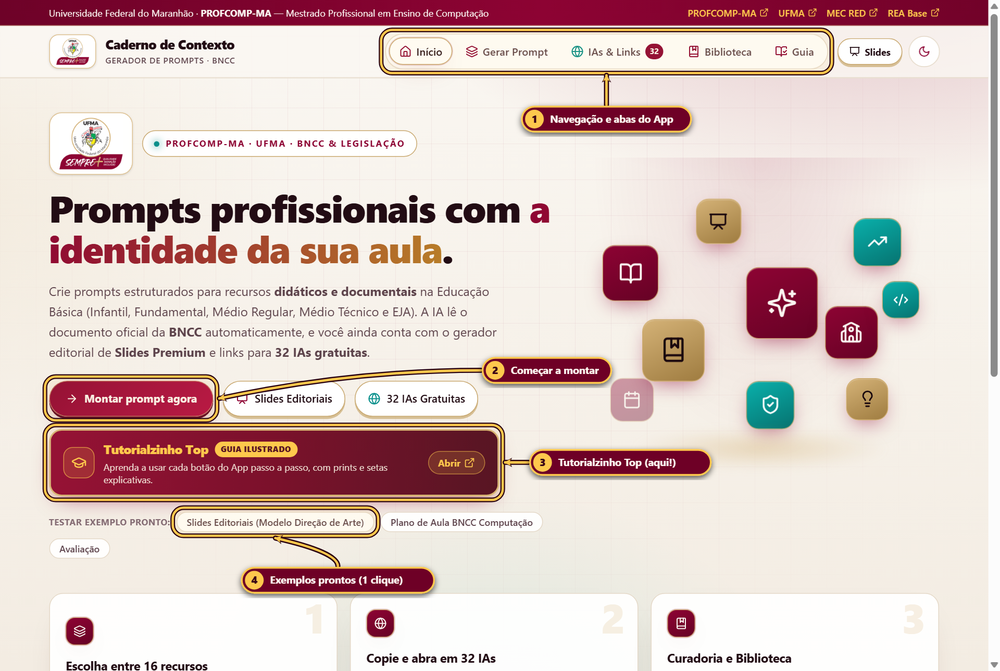

1
Começando pelo início
Conhecendo a Tela Inicial e o Menu Principal
Ao abrir o aplicativo, você encontra o menu no topo, os atalhos principais e exemplos prontos para testar sem precisar digitar nada.

🔍 Clique para ampliar
1
Navegação e abas do App
Alterne a qualquer momento entre Início, Gerar Prompt, IAs & Links (32), Biblioteca, Guia, atalho de Slides e o botão de tema Claro/Escuro (ícone de lua/sol).
2
Montar prompt agora
Abre o construtor limpo para você montar seu prompt do zero em 4 passos simples.
3
Tutorialzinho Top
Este guia visual completo fica sempre destacado aqui na primeira página para consulta rápida.
4
Exemplos prontos (1 clique)
Preenche automaticamente um exemplo completo (Slides, Plano de Aula ou Avaliação) para você ver como funciona na prática.